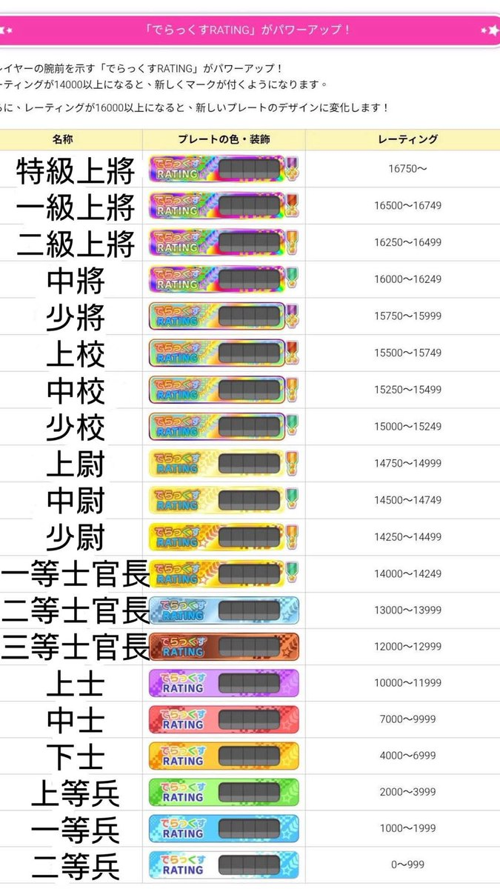

破滅かなたく(はーめつ)
@Kanataqqq0221
RT @thenerdkid351: ⚠️maimai規則⚠️
二兵👶🏻我講一下規則
1.看到上將👦🏻要打招呼🙋🏻🙋🏻 遇到就要在店外也是😤😤 然後不能揮手❌ 集合完要講謝謝上將🙇🏻🙇🏻 上將走的時候要說上將再見🫡🫡 你們走的時候也要說上將再見👋👋 趕快認我們的臉😎😎 不要認不…

drain（4/4~4/8 🇯🇵）
@thenerdkid351
⚠️maimai規則⚠️
二兵👶🏻我講一下規則
1.看到上將👦🏻要打招呼🙋🏻🙋🏻 遇到就要在店外也是😤😤 然後不能揮手❌ 集合完要講謝謝上將🙇🏻🙇🏻 上將走的時候要說上將再見🫡🫡 你們走的時候也要說上將再見👋👋 趕快認我們的臉😎😎 不要認不出來😠😠 遇到校級🧑🏫🧑🏫也要打招呼 注意禮貌❗️❗️
2.群組裡上將傳的訊息✉️✉️ 不 https://t.co/I7sr3O3gEj